Quem é Naruto?
Um jovem ninja de Konoha, a Vila Oculta da Folha. Ele quer se tornar Hokage e conquistar o respeito das pessoas ao seu redor.
UM PRIMEIRO PASSO NO MUNDO NINJA
Naruto é a história de um jovem ninja da Vila Oculta da Folha que sonha em se tornar Hokage, o líder de sua aldeia. Explore personagens, vilas e clãs com explicações para quem está chegando agora.

Para começar
Quatro ideias ajudam a entender o mundo de Naruto sem precisar conhecer a série.
Um jovem ninja de Konoha, a Vila Oculta da Folha. Ele quer se tornar Hokage e conquistar o respeito das pessoas ao seu redor.
É o lar e centro de treinamento dos ninjas de uma região. Cada vila tem seus próprios líderes, tradições e habilidades.
É o título dado ao líder de Konoha, responsável por proteger a vila e orientar seus ninjas.
Um ideal de Konoha que valoriza o cuidado entre as pessoas e a transmissão de esperança e ensinamentos às próximas gerações.
Conheça o elenco
Clique em um personagem para ver mais informações, sem spoilers importantes.
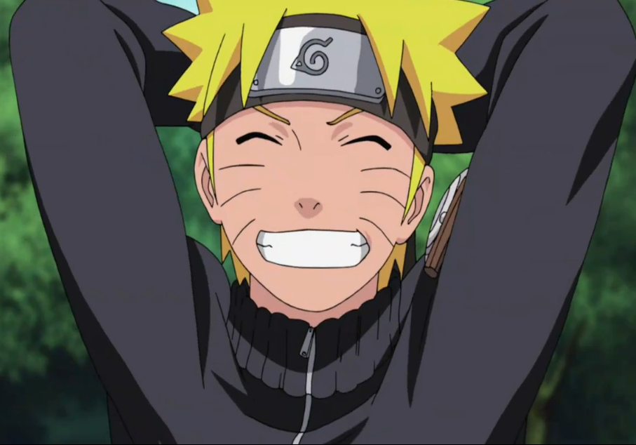
Naruto UzumakiUm ninja persistente que sonha em se tornar Hokage.Saiba maisNaruto é um ninja enérgico da Vila Oculta da Folha. Seu grande objetivo é se tornar Hokage e conquistar o reconhecimento de seus companheiros.
 JiraiyaUm ninja experiente, escritor e mentor.Saiba mais
JiraiyaUm ninja experiente, escritor e mentor.Saiba maisJiraiya é um dos ninjas mais experientes de Konoha. Além de suas aventuras, também é conhecido por escrever histórias.
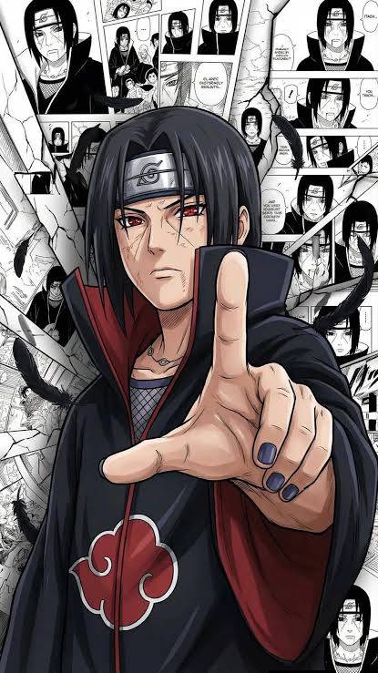
Itachi UchihaUm shinobi reservado e conhecido por sua habilidade.Saiba maisItachi pertence ao clã Uchiha e é reconhecido por sua inteligência e talento como ninja.
 Minato NamikazeUm ninja de Konoha lembrado por sua velocidade.Saiba mais
Minato NamikazeUm ninja de Konoha lembrado por sua velocidade.Saiba maisMinato é conhecido por sua inteligência e velocidade. Ele chegou a ocupar o cargo de Hokage, líder da Vila Oculta da Folha.
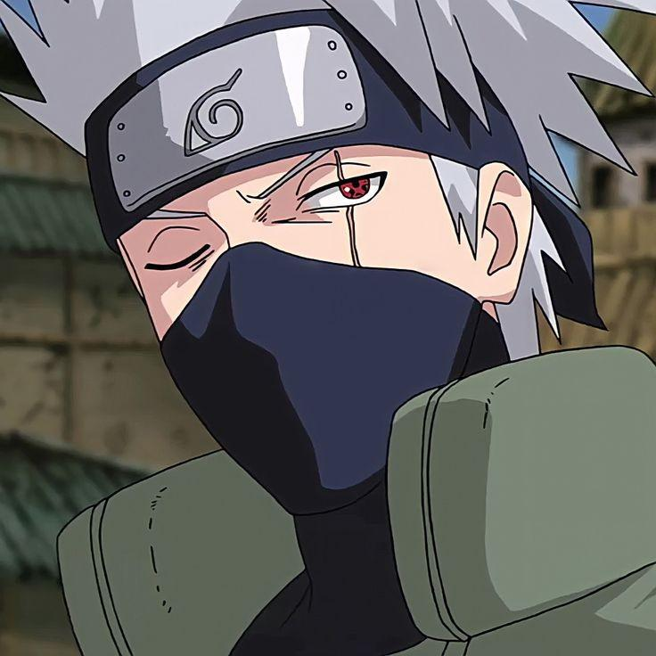
Kakashi HatakeO experiente instrutor do Time 7.Saiba maisKakashi é um ninja experiente de Konoha e líder do Time 7, conhecido por orientar seus alunos com calma e estratégia.
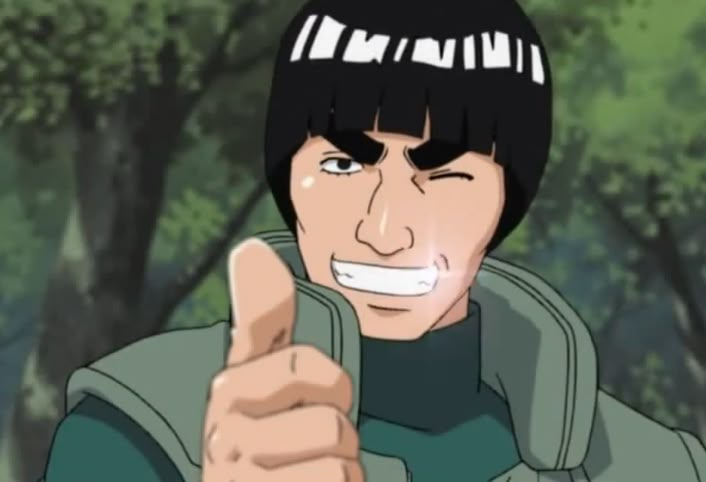
Maito GuyUm mestre de taijutsu famoso por sua energia e determinação.Saiba maisMaito Guy é um jōnin de Konoha que acredita no esforço e no treinamento. Ele é o mentor de Rock Lee e um dos ninjas mais animados da vila.
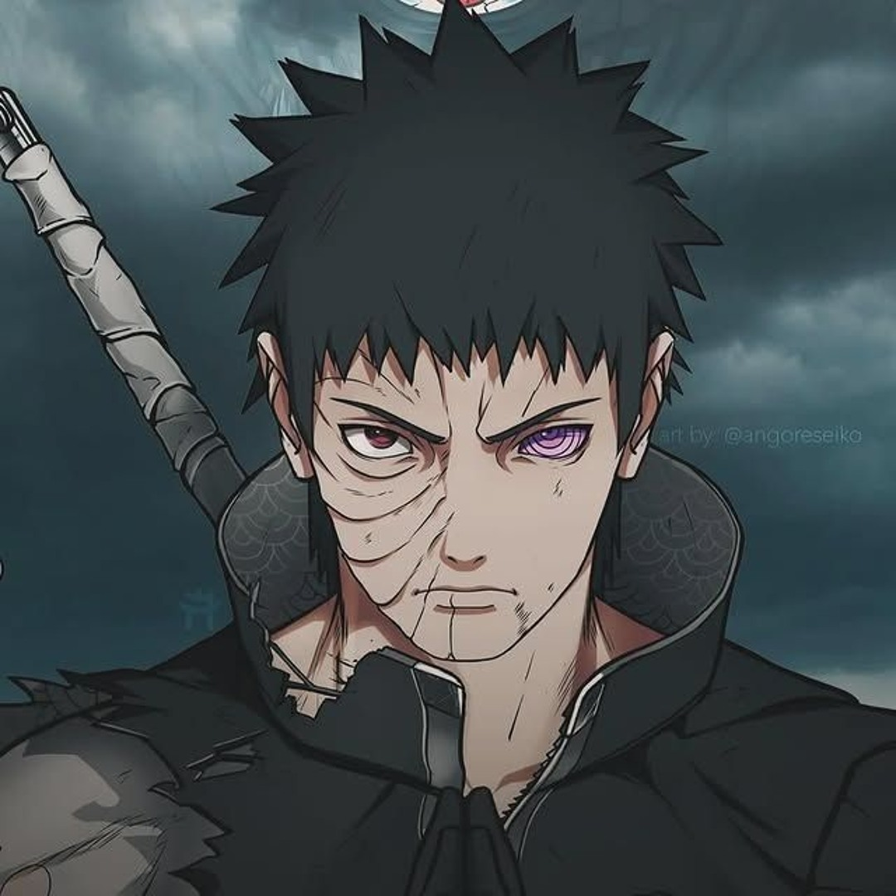
Obito UchihaUm shinobi do clã Uchiha que valoriza seus companheiros.Saiba maisObito é um ninja do clã Uchiha. Sua história explora os laços entre companheiros e o impacto das escolhas de cada shinobi.
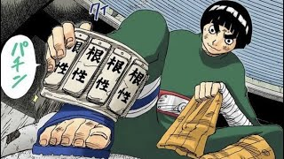
Rock LeeUm ninja dedicado que se especializa em combate corpo a corpo.Saiba maisRock Lee é aluno de Maito Guy. Com muito treino e perseverança, busca se tornar um grande ninja usando suas habilidades de taijutsu.
 Shikamaru NaraUm estrategista brilhante que prefere resolver desafios com calma.Saiba mais
Shikamaru NaraUm estrategista brilhante que prefere resolver desafios com calma.Saiba maisShikamaru é calmo, observador e dono de um raciocínio estratégico. As técnicas de sombras do clã Nara combinam com sua habilidade de planejar.
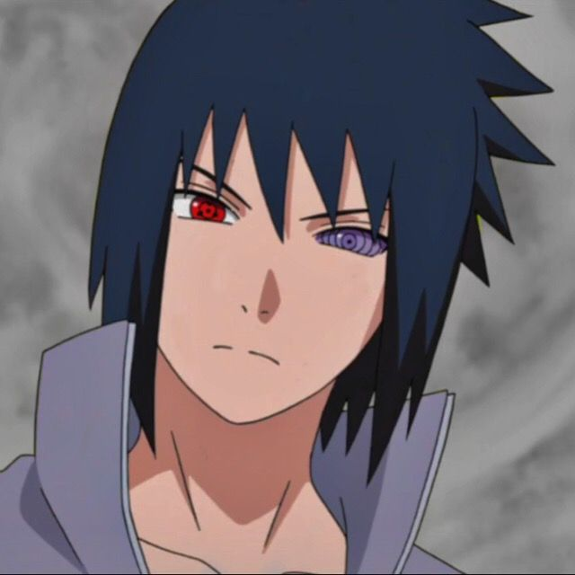
Sasuke UchihaUm talento dedicado ao treinamento e integrante do Time 7.Saiba maisSasuke é um ninja reservado e talentoso, conhecido por sua disciplina e dedicação ao treinamento. Ele faz parte do Time 7 junto de Naruto e Sakura.
A jornada
Da infância em Konoha à realização do seu maior sonho: acompanhe as fases que mudaram Naruto e o mundo ninja.
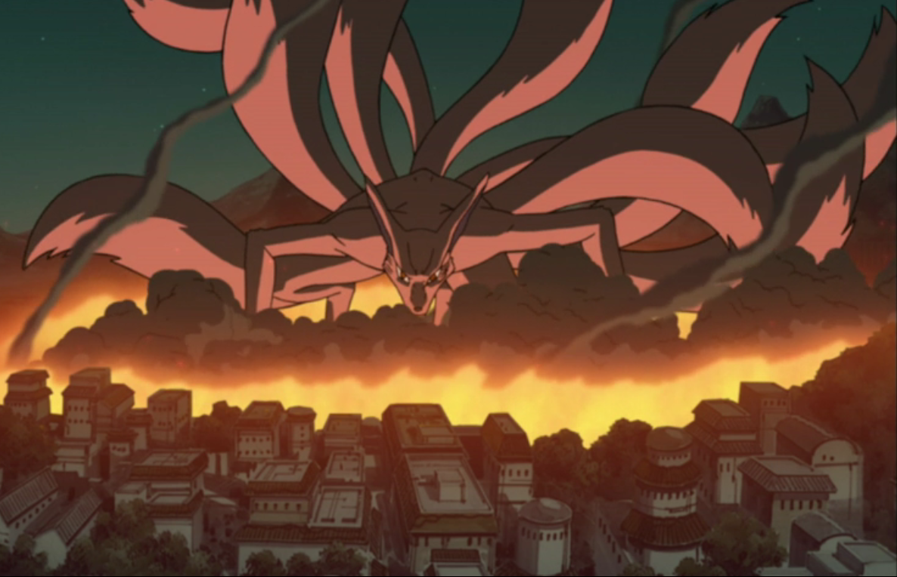
01 · Origem
Na noite em que Naruto nasce, a Raposa de Nove Caudas ataca Konoha. Para salvar a vila, o Quarto Hokage sela a criatura dentro do bebê, que fica órfão naquela mesma noite.
O segredo do selo faz com que muitos moradores associem Naruto à tragédia. Ele cresce sem conhecer os pais e sem entender por que é tratado com distância.
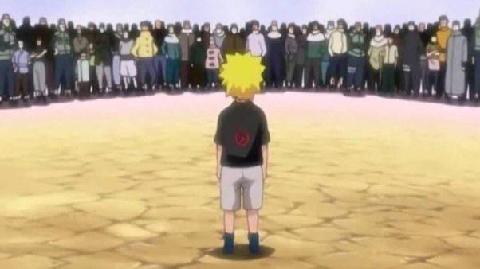
02 · Infância
Na infância, Naruto vive praticamente sozinho e é rejeitado por muitos adultos da vila por carregar a Raposa de Nove Caudas. Ele tinha motivos para crescer ressentido e passar a odiar o mundo que o tratava como um perigo.
Mesmo assim, Naruto escolhe não desistir das pessoas nem dos próprios ideais. Com o apoio de Iruka, transforma a solidão em vontade de conquistar respeito e sonha em se tornar Hokage — não para se vingar, mas para ser reconhecido e proteger a vila.
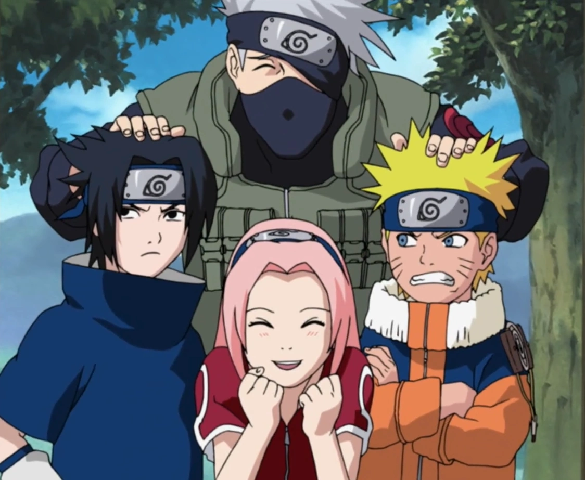
03 · Primeiras missões
Depois de se formar na Academia, Naruto passa a treinar com Sasuke e Sakura sob a liderança de Kakashi. As primeiras missões mostram que ser ninja exige cooperação e confiança.
Na missão no País das Ondas, o grupo enfrenta Zabuza e Haku. A experiência deixa claro para Naruto que cada adversário tem uma história e pessoas que deseja proteger.
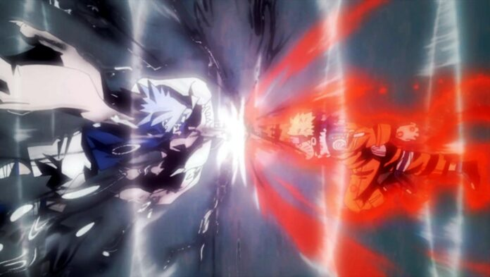
04 · Ruptura
Nos Exames Chunin, Naruto conhece novos ninjas e enfrenta Gaara, enquanto Orochimaru ameaça Konoha. Os desafios fazem Naruto perceber o quanto cresceu e o que ainda precisa aprender.
Movido pela busca de poder e vingança contra Itachi, Sasuke abandona a vila. Naruto tenta trazê-lo de volta, mas a distância entre os dois se aprofunda e se torna uma das questões centrais da história.
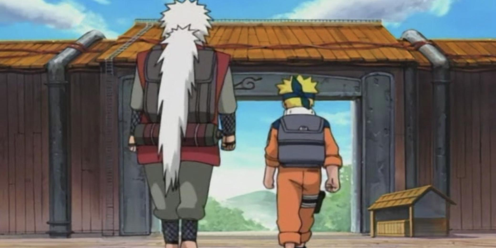
05 · Shippuden
Após anos treinando com Jiraiya, Naruto volta a Konoha mais preparado. A organização Akatsuki começa a capturar as Bestas com Cauda, colocando seus amigos e várias aldeias em risco.
O vínculo com Jiraiya vai além da relação entre mestre e aluno: ele oferece a Naruto apoio e direção. A perda do mentor se torna uma dor profunda, mas também fortalece sua determinação.
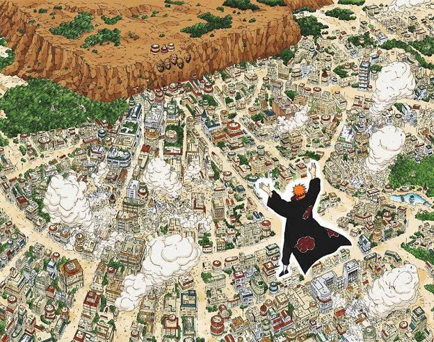
06 · Conflitos
Pain ataca Konoha e confronta Naruto com uma pergunta difícil: como alcançar a paz em um mundo marcado por guerras e sofrimento? Naruto escuta seu adversário e procura interromper o ciclo de retaliação.
Enquanto isso, a verdade sobre Itachi muda a forma como Sasuke enxerga a própria história. As escolhas dos dois irmãos mostram como segredos e ressentimentos afetam gerações inteiras.
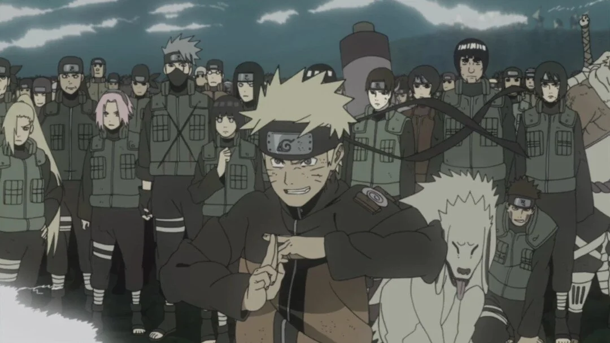
07 · Guerra Ninja
A Quarta Guerra Mundial Ninja reúne as cinco grandes aldeias contra um inimigo que ameaça todos. Naruto passa a lutar ao lado de antigos rivais e aprende a cooperar com Kurama, a Raposa selada nele.
Seus amigos — entre eles Sakura, Kakashi e os companheiros de Konoha — permanecem ao seu lado. A confiança que Naruto conquistou ao longo da jornada ajuda a unir os shinobi.

08 · Desfecho
Depois da guerra, Naruto e Sasuke ainda precisam resolver suas diferenças. O confronto final encerra a rivalidade e reafirma o laço que começou quando os dois eram companheiros de equipe.
Naruto alcança o reconhecimento que buscava desde criança. Mais do que um título, tornar-se Hokage representa sua vontade de proteger Konoha e construir um futuro de cooperação entre as aldeias.
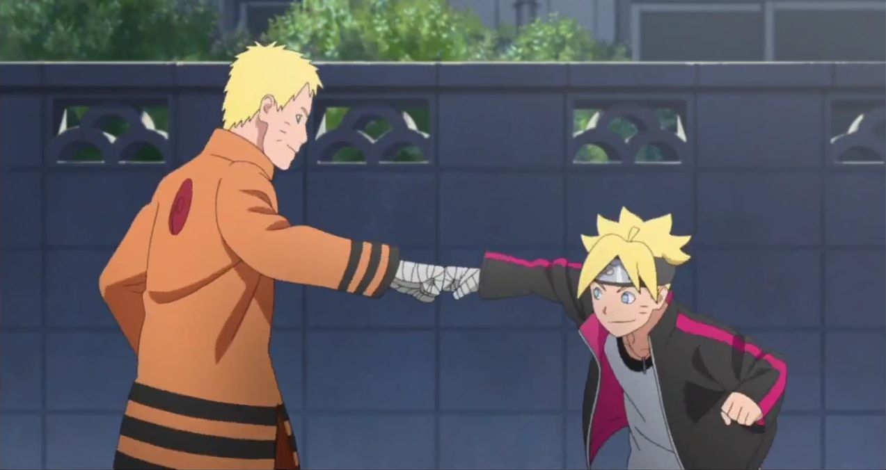
09 · Nova geração
A história continua em Boruto: Naruto Next Generations, acompanhando Boruto Uzumaki, filho de Naruto, e uma nova geração de ninjas em Konoha.
Agora Hokage, Naruto tenta equilibrar as responsabilidades de proteger a vila com a vida em família. Boruto busca construir o próprio caminho em um mundo que mudou desde a guerra.
O mundo shinobi
Explore as cinco grandes aldeias: suas nações, tradições e o que torna cada uma única.
Vila Oculta da Folha

O lar de Naruto e de muitos dos principais clãs da série.
Ver detalhesLocalização: região de florestas e montanhas.
País: País do Fogo.
Especialidade: técnicas variadas entre os clãs e a Vontade do Fogo, que valoriza proteger a comunidade.
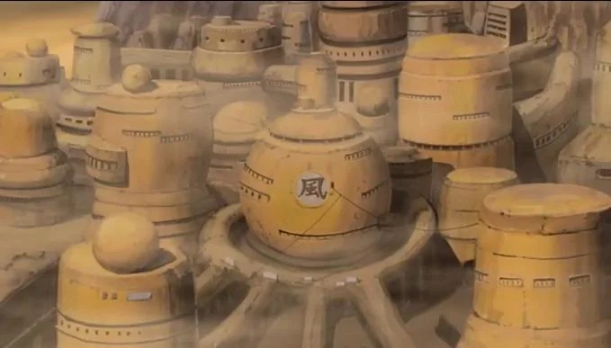
Vila Oculta da Areia
Uma aldeia moldada pelo ambiente árido do deserto.
Ver detalhesLocalização: região desértica.
País: País do Vento.
Especialidade: técnicas com marionetes e combate adaptado ao deserto. Gaara é um de seus ninjas mais conhecidos.
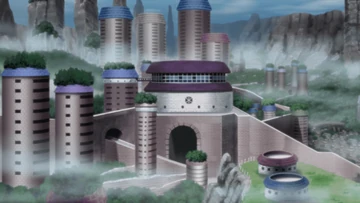
Vila Oculta da Névoa
Uma aldeia insular com uma história marcada por mudanças.
Ver detalhesLocalização: ilhas cercadas pelo mar.
País: País da Água.
Especialidade: técnicas de névoa e tradição dos Sete Espadachins da Névoa.
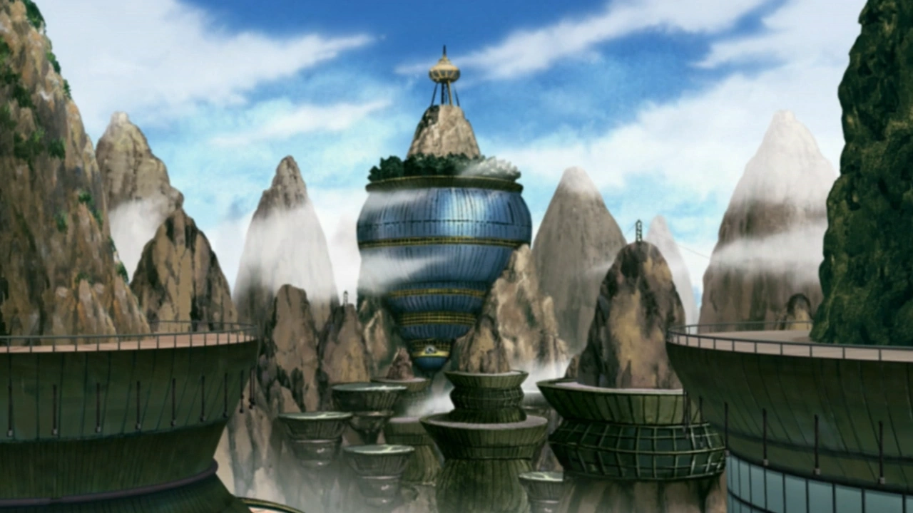
Vila Oculta da Nuvem
Uma aldeia entre montanhas, conhecida por seus shinobi poderosos.
Ver detalhesLocalização: montanhas elevadas.
País: País do Relâmpago.
Especialidade: técnicas de relâmpago e treinamento de jinchūriki, como Killer Bee.
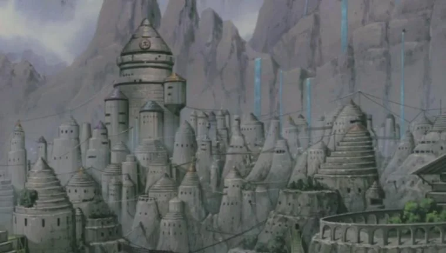
Vila Oculta da Pedra
Uma aldeia cercada pelo relevo rochoso do País da Terra.
Ver detalhesLocalização: montanhas e formações rochosas.
País: País da Terra.
Especialidade: técnicas de natureza terra e ninjas reconhecidos pela resistência.
Linhagens lendárias
Cada clã carrega uma herança de técnicas, habilidades e histórias que definem o mundo ninja.

Sharingan
Um dos clãs mais influentes de Konohagakure.
Ver detalhesOrigem: Konohagakure, a Vila Oculta da Folha.
Especialidade: Sharingan, genjutsu e técnicas de Liberação de Fogo.
Legado: Itachi e Sasuke Uchiha são figuras centrais na história do clã e de Konoha.

Byakugan e Punho Gentil
Uma linhagem tradicional de Konoha, conhecida pela visão especial.
Ver detalhesOrigem: Konohagakure, a Vila Oculta da Folha.
Especialidade: Byakugan, que amplia a percepção visual, e o estilo de combate Punho Gentil, que atinge a rede de chakra.
Organização: a família é tradicionalmente dividida entre a casa principal e a secundária.
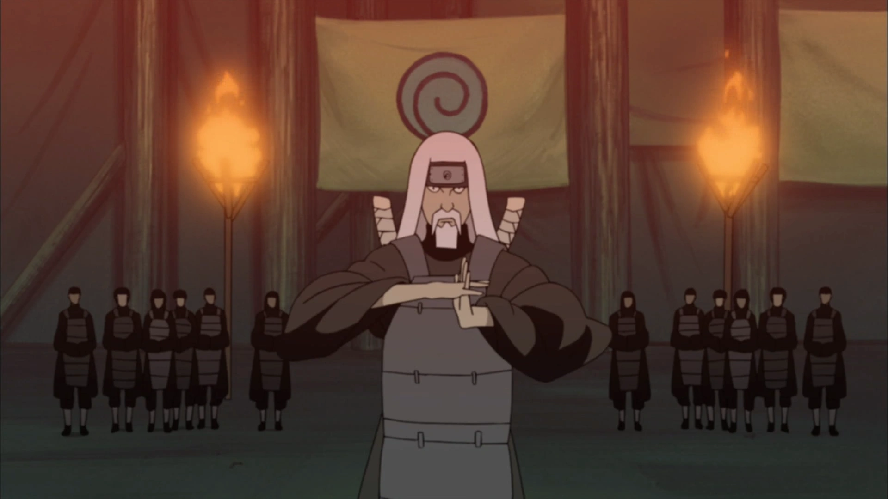
Vitalidade e selamento
Um clã conhecido por sua força vital e seus laços com Konoha.
Ver detalhesOrigem: Uzushiogakure, a Vila Oculta do Redemoinho; o clã também manteve uma ligação histórica com Konoha.
Especialidade: técnicas de selamento e grande vitalidade, que favorece a longevidade e a recuperação.
Legado: Kushina e Naruto pertencem ao clã Uzumaki.

Sombras e estratégia
Shinobi estrategistas que usam as sombras para controlar o combate.
Ver detalhesOrigem: Konohagakure, a Vila Oculta da Folha.
Especialidade: técnicas de manipulação das sombras, como a Técnica de Imitação das Sombras.
Laços: o clã costuma atuar em conjunto com os clãs Akimichi e Yamanaka, formando o trio Ino–Shika–Chō.
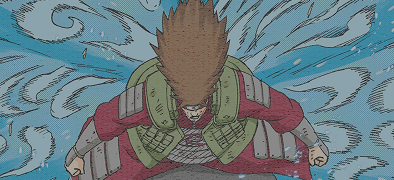
Expansão corporal
Seus integrantes convertem energia em força para ampliar o corpo.
Ver detalhesOrigem: Konohagakure, a Vila Oculta da Folha.
Especialidade: técnicas que aumentam o tamanho e a força do corpo, usando chakra e energia armazenada.
Laços: junto aos clãs Nara e Yamanaka, mantém uma parceria tradicional de equipe.

Técnicas mentais
Especialistas em comunicação e transmissão de consciência.
Ver detalhesOrigem: Konohagakure, a Vila Oculta da Folha.
Especialidade: técnicas de transferência mental, percepção e comunicação a distância.
Laços: atua em parceria com os clãs Nara e Akimichi no trio Ino–Shika–Chō.